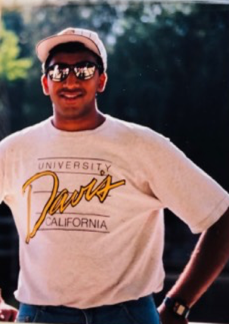
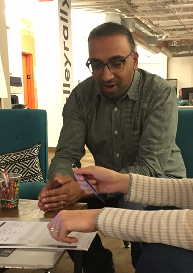

You probably are here to see some of my work so I’m even more flattered if you spend any time here. I never know to share things about me but like the rest of the site, I chose to
I’m a seasoned Internet professional who started in the consumer space and have specialized in the enterprise design space for the past few years.
ACT ONEI spent my youth not really knowing what I wanted to do with my life outside telling stories but lavished that creative edge all through my development. I didnt have an outlet when I went to college at UC Davis and ended up majoring in the life sciences. I balanced this life with art and film classes thinking the creative arts since I was told they only led to starving artists. |
 |
ACT TWOI knew I wasn't going to do anything in the life sciences by the time I was a junior but being I finish what I start and saw no quick pivot into anything else. After I finished my Bachelor of Science, I continued taking classes but after having an epiphany that I could jump into the burgeoning Internet field without a degree. I jumped onto many rollercoasters and had a lot of fun along the way. My career was built upon web design and front-end development and it took me all the way to management at design agencies. |
|
ACT THREEAfter my agency role shut down due to the Great Recession, it led to a spark in my design evolution as I geared back towards hands-on work but this time focusing more on product design and user experience. The fact that this phase of design involves deep empathy, exposure to many industries, and a very open minded approach has leveraged my past divergent experiences very well. I am still very much a generalist who performs both hands-on and leadership activities and I like it that way. I'm currently at Slalom leading initiatives across Silicon Valley. |
 |